What To Know About Us - For Creative Talent
Built for creatives who want more. More ownership. More collaboration. More than gig work. Real projects. Real earning. Real Learning.
A different kind of studio.
Everything you need to know before you decide – who we are, how we work, what you can earn, and where the collective can take you.
Fractis Studios is a multidisciplinary creative studio and collective based in Johannesburg, working locally and internationally. Senior-led, design-driven, and built on transparent shared ownership where every creative on every project earns, owns, and grows.
Two paths in – ready to deliver now, or building toward it through the Fractis Academy. This document covers both. Read up on the Fractis Academy after if you are interested.
Browse the guide below or download the full PDF:


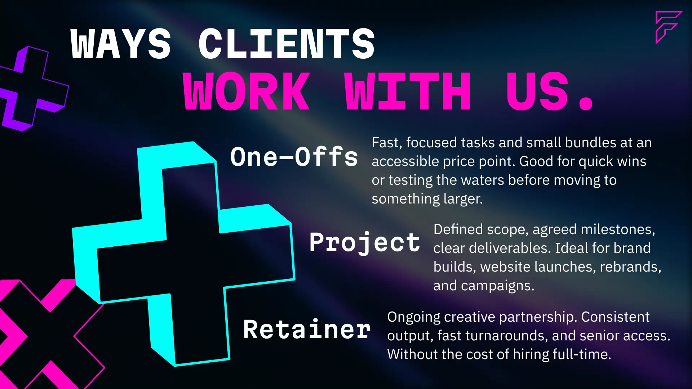
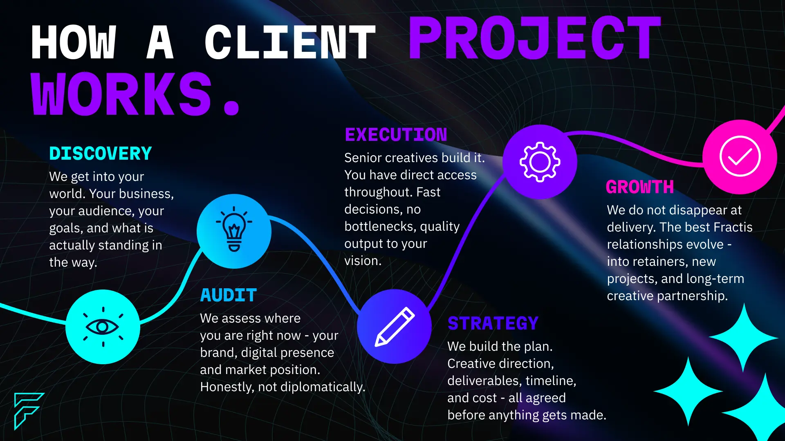


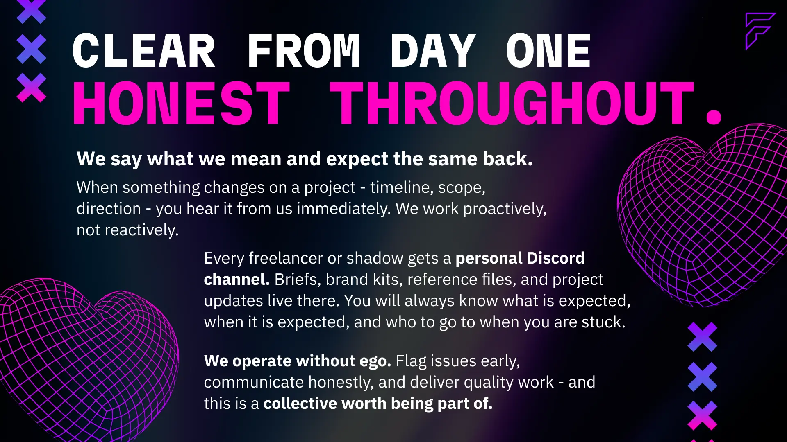
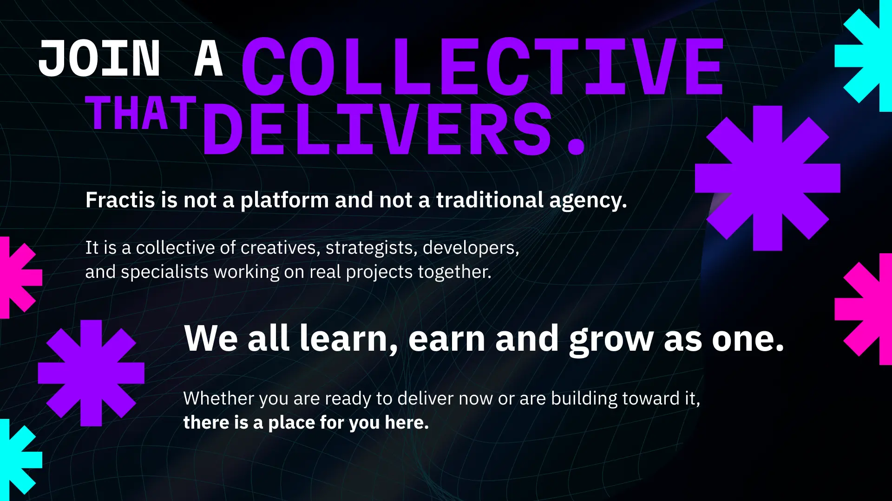
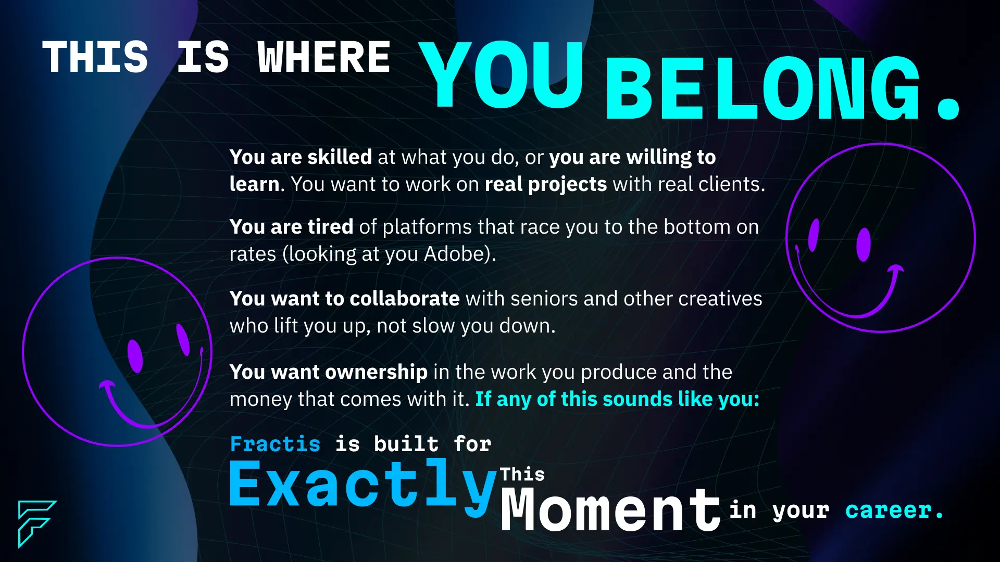
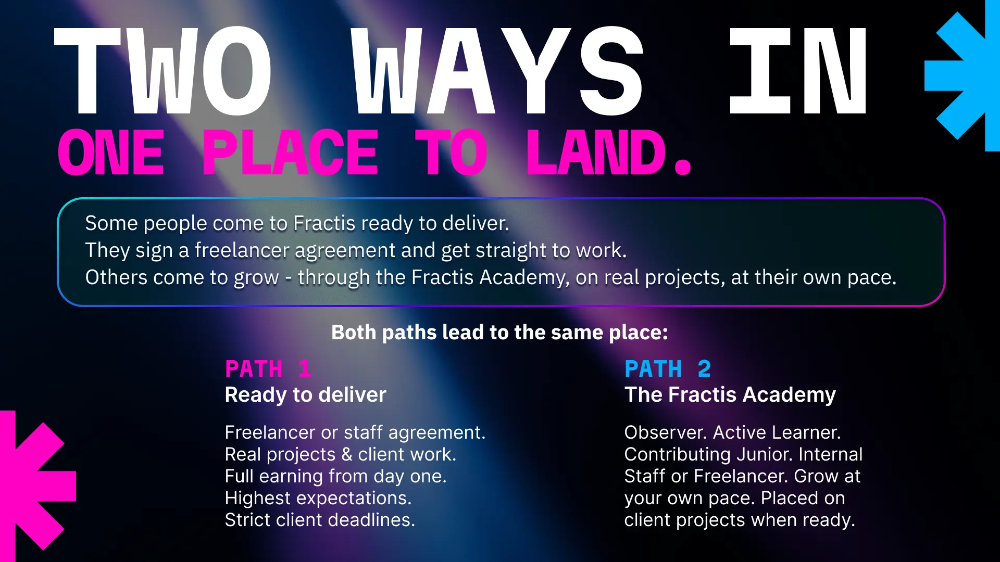
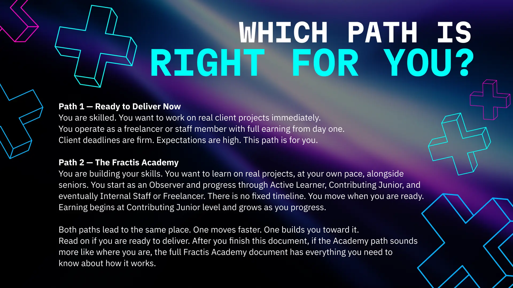
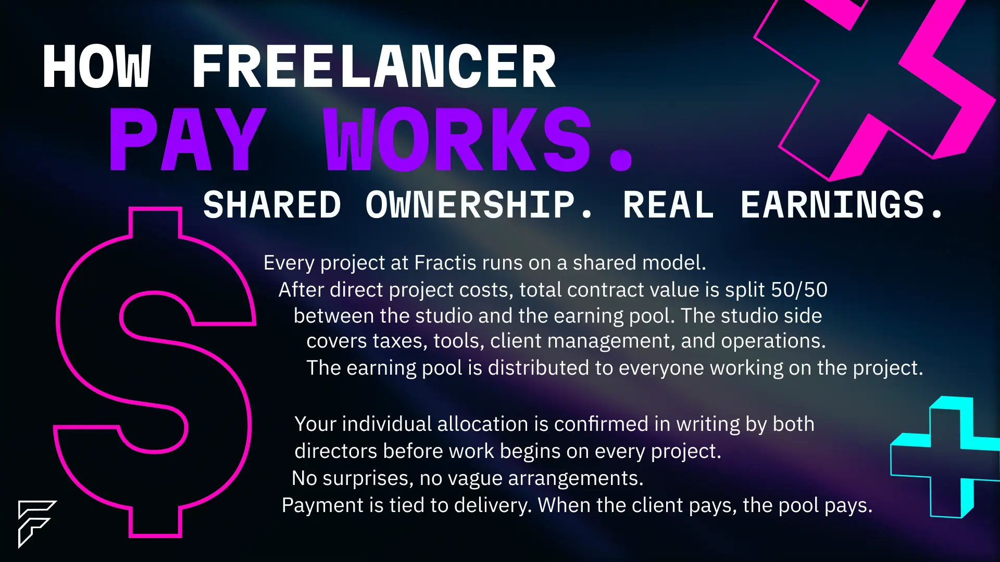
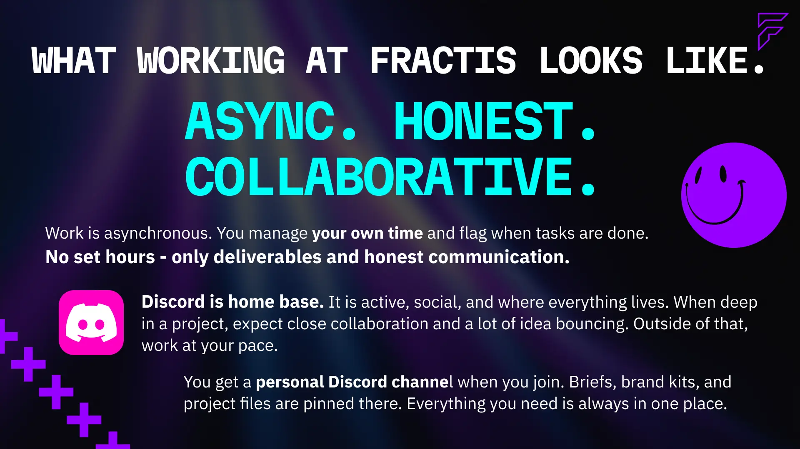
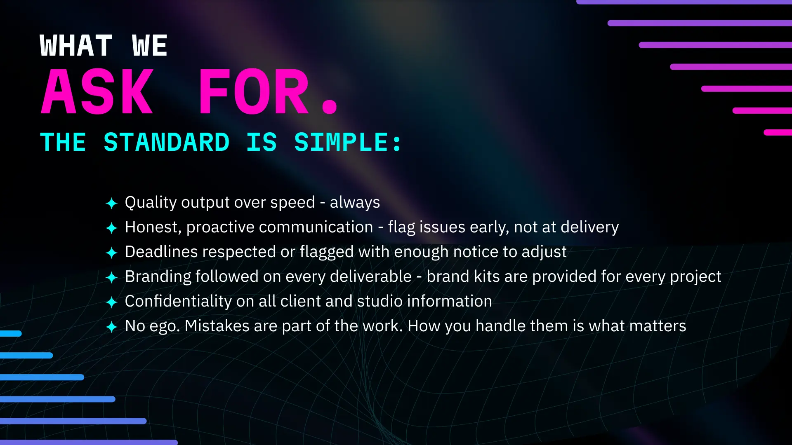
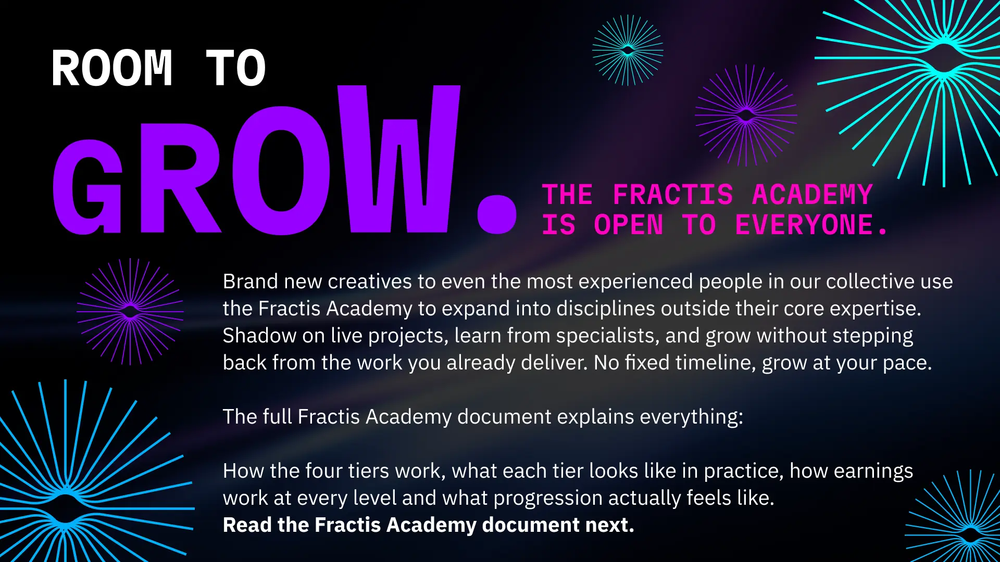
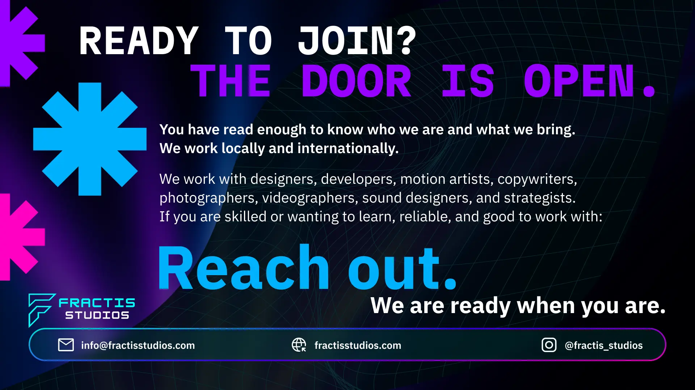
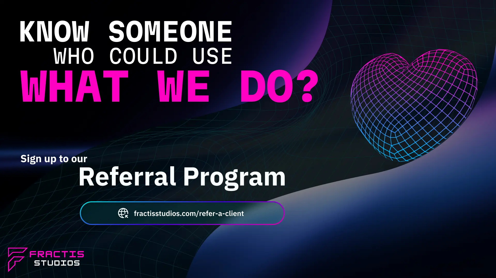
One studio. Two paths in.
Fractis Studios works with designers, developers, motion artists, copywriters, photographers, videographers, sound designers, and strategists – at every stage of their career.
Whether you are based in Johannesburg, elsewhere in South Africa, or working internationally – the collective is built for people who take their craft seriously and want their work to matter.
Whether you are here to deliver immediately or here to grow, the door is open.
Interested in learning and growing? Start with the Academy.
Read the Fractis Academy GuideKnow a brand or business that needs creative work done?
Apply as a referral partner and earn 5% – 10% commission for any clients referred.
Read the Referral Partner Guide